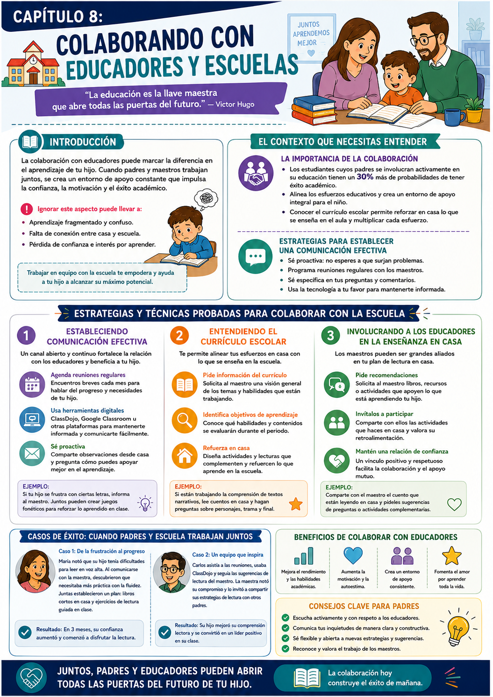

Pasaste semanas trabajando la lectura en casa — y de repente tu hijo llega frustrado porque algo en la escuela no le cierra. ¿Te suena? Esa desconexión entre lo que aprendió en casa y lo que le piden en el aula es más común de lo que parece.
Cuando la mamá y el maestro trabajan alineados, el chico no tiene que "traducir" entre dos sistemas distintos. Todo suma en la misma dirección — y eso acelera el aprendizaje de forma notable.
Alianza con el maestro
El docente tiene información que vos no tenés. Vos tenés contexto del hogar que él no tiene. Juntos tienen el panorama completo.
Conocer el currículo
Saber qué se enseña en el aula te permite reforzar exactamente eso en casa — sin ir en direcciones distintas.
Apoyos adicionales
La mayoría de las escuelas tienen programas de intervención. Pedirlos a tiempo puede marcar una diferencia enorme.
Lo que dice la investigación
Los chicos cuyos padres se involucran activamente en su educación tienen un 30% más de probabilidades de tener éxito académico. No es magia — es el resultado de que dos entornos importantes del chico tiran para el mismo lado.
✅ Antes de arrancar este capítulo

Tuki te dice:
Juntos, padres y educadores pueden abrir todas las puertas del futuro de tu hijo. La colaboración hoy construye el éxito de mañana.
Para colaborar bien con la escuela, primero hay que entender por qué esa colaboración es tan poderosa — y qué pasa cuando no existe.
El aprendizaje fragmentado
Qué pasa cuando casa y escuela van por caminos distintos
Cuando lo que se trabaja en casa y lo que se enseña en el aula no están alineados, el chico recibe mensajes contradictorios. Eso genera confusión, fatiga y, eventualmente, desinterés.
Por ejemplo: si en casa trabajás la lectura fonética y en la escuela usan un método global, el chico tiene que hacer el esfuerzo de "traducir" entre dos sistemas. Ese esfuerzo extra cansa y desmotiva.
La solución
Una sola conversación con el maestro puede alinearte completamente. No hace falta que uses el mismo método — alcanza con saber qué está aprendiendo y reforzar eso en casa.
Conocer el currículo escolar
Anticipar lo que viene · Preparar el terreno
Cuando entendés qué se enseña en el aula, podés anticipar los desafíos y preparar a tu hijo antes de que lleguen. Eso no es hacer trampa — es ser estratégica.
- 1Solicitá una copia del currículo o preguntale al maestro qué habilidades lectoras están trabajando este trimestre.
- 2Preguntá qué metodología usa el aula — así podés usar algo compatible en casa.
- 3Diseñá actividades caseras que refuercen exactamente lo que está viendo en clase.
Ejemplo concreto
Si el currículo dice que están introduciendo libros de nivel 1, elegí libros del mismo nivel para leer en casa — enfatizando los sonidos y palabras clave que necesita dominar.
Programas de intervención
Cuándo y cómo pedirlos
La mayoría de las escuelas tienen programas de apoyo para chicos que necesitan un enfoque diferente. Pedirlos no es un fracaso — es una herramienta más que tenés a disposición.
- 1Preguntá al maestro: ¿Qué programas de intervención ofrece la escuela? ¿Clases de lectura intensiva? ¿Recursos en línea?
- 2Pedí una evaluación formal: si sentís que necesita apoyo adicional, podés pedir una evaluación que puede derivar en un plan personalizado.
- 3Conectate con especialistas: orientadores y especialistas en lectura pueden darte estrategias muy específicas para el caso de tu hijo.
Ejemplo concreto
Si tiene dificultades con la fluidez, podés pedir que participe en un programa de lectura de pares — donde un estudiante más avanzado lee con él. Práctica + confianza en un ambiente relajado.
Tuki te dice:
Escuchá activamente, comunicá con respeto y sé abierta a nuevas estrategias. El maestro y vos son el mejor equipo que puede tener tu hijo.
Tres estrategias concretas para construir una colaboración real con la escuela — comunicación efectiva, entender el currículo y pedir apoyos cuando hace falta.
Comunicación proactiva y específica
No esperes que surjan problemas
La comunicación efectiva no es solo ir a la reunión de padres una vez por trimestre. Es establecer un canal abierto y continuo donde ambos — vos y el maestro — puedan compartir observaciones y estrategias.
- 1Reuniones breves mensuales: no esperés a las reuniones formales. Un mensaje o mail cada mes para intercambiar información va mucho más lejos.
- 2Usá herramientas digitales: ClassDojo, Google Classroom o incluso un grupo de WhatsApp con el maestro permiten comunicación fluida y rápida.
- 3Sé específica en las preguntas: en lugar de "¿cómo va mi hijo?", preguntá "¿cómo está manejando la identificación de palabras con sílabas cerradas?" — eso muestra que estás involucrada y genera respuestas útiles.
Ejemplo concreto
Si notás en casa que se frustra con ciertas letras o sonidos, comunicáselo al maestro. Juntos pueden desarrollar juegos fonéticos que refuercen exactamente eso en clase y en casa al mismo tiempo.
Entender y usar el currículo
Reforzar en casa lo que se enseña en el aula
Conocer el currículo te permite anticipar lo que viene y preparar el terreno antes de que llegue. Es como tener el mapa antes de empezar el viaje.
- 1Pedí una copia del currículo o preguntale al maestro qué temas cubre este trimestre.
- 2Identificá las habilidades específicas que están trabajando y buscá actividades caseras que las refuercen.
- 3Creá un plan complementario — no paralelo. La idea es sumar, no duplicar.
- 4Revisá el plan cada mes con el maestro para ver si sigue siendo relevante.
Involucrar a los educadores en casa
Compartir lo que hacés · Recibir feedback
La colaboración es bidireccional. No solo pedís información — también compartís lo que estás haciendo en casa para que el maestro pueda darte feedback y sugerencias.
- 1Contale al maestro qué libro están leyendo juntos en casa y pedile sugerencias de preguntas o actividades para profundizar.
- 2Compartí las actividades que funcionan — si algo enganchó bien a tu hijo, el maestro puede incorporarlo al aula.
- 3Pedile retroalimentación activa: "¿lo que hago en casa está alineado con lo que trabajamos acá?"
Casos de éxito
María notó que su hijo tenía dificultades con la lectura en voz alta. Lo comunicó al maestro. Juntas diseñaron un plan: libros cortos en casa + ejercicios de fluidez guiados en clase. En 3 meses, su confianza cambió completamente.
Tuki te dice:
Un vínculo positivo y respetuoso con el maestro facilita la colaboración y el apoyo mutuo. Reconocé y valorá su trabajo — eso abre todas las puertas.
Dos ejercicios concretos para arrancar esta semana más las dos recetas del capítulo — todo accionable desde hoy.
💬 Comunicación Abierta con el Maestro
¿Para qué sirve? Establecer una comunicación proactiva y específica que mejore el seguimiento del aprendizaje de tu hijo.
- 1Hacé una lista de al menos 5 preguntas específicas sobre el progreso de tu hijo y el currículo actual.
- 2Enviá un mail al maestro solicitando una reunión breve — presencial o virtual. Explicá que es para mejorar la experiencia de aprendizaje de tu hijo.
- 3Durante la reunión, tomá notas de los consejos y recursos que te da. Eso te ayuda a implementarlos y recordarlos.
- 4Acordá un seguimiento en 2-4 semanas para ver cómo va el progreso y ajustar si hace falta.
Resultado: Una relación más sólida con el maestro y un entendimiento claro de las necesidades educativas de tu hijo.
📅 Calendario de Aprendizaje Compartido
¿Para qué sirve? Crear un recurso visual que conecte lo que se enseña en la escuela con las actividades que hacen en casa.
- 1Investigá qué temas cubre el currículo en las próximas semanas — preguntale al maestro o revisá la agenda escolar.
- 2Creá un calendario visual con las fechas importantes: temas de lectura, evaluaciones, eventos.
- 3Agregá actividades caseras relacionadas — si estudian animales, planificá leer un libro sobre eso o escribir una historia.
- 4Revisá el calendario con tu hijo cada semana y ajustá según su progreso y el feedback del maestro.
Resultado: Un recurso visual que mantiene a tu hijo enfocado y refuerza lo aprendido en el aula.
📖 Lectura en Doble Canal
¿Para qué sirve? Fortalecer la comprensión lectora generando un vínculo directo entre la lectura en casa y la escuela.
- 1Elegí un libro que tu hijo esté leyendo en clase.
- 2Leé el primer capítulo juntos, alternando párrafos.
- 3Pedile que resuma lo que entendió y que escriba sus pensamientos en el cuaderno.
- 4Compartí tus observaciones y preguntas — fomentá el diálogo sobre la historia.
Resultado: Mejora en la comprensión lectora y mayor interés por el libro que está viendo en clase.
📝 Correspondencia con el Maestro
¿Para qué sirve? Mantener una comunicación fluida y sistemática que mejore el seguimiento del progreso.
- 1Creá una libreta donde anotés observaciones sobre el aprendizaje de tu hijo en casa cada semana.
- 2Una vez por semana, enviá un mail breve al maestro: qué notaste + una pregunta sobre el progreso en clase.
- 3Antes de cada reunión, revisá la libreta y el historial de mails para preparar puntos de discusión.
- 4Guardá las respuestas del maestro — son un registro valioso del progreso de tu hijo.
Resultado: Comunicación fluida que mantiene a todos alineados y permite ajustar la estrategia rápidamente.
- 1No comunicarte con el maestro: ignorar a los educadores lleva a malentendidos y esfuerzos duplicados. La comunicación regular es la base de todo.
- 2Desconocer el currículo: no saber qué se enseña en clase puede hacer que tus esfuerzos en casa sean irrelevantes o contradictorios.
- 3Esperar resultados inmediatos: la lectura es un proceso. Los avances pueden ser lentos — celebrá cada pequeño logro y tené paciencia.
- 4No involucrar a tu hijo: hacer todo por él puede desmotivarlo. Involucrálo en las decisiones sobre su aprendizaje — que sienta que tiene agencia.
- 5No ajustar la estrategia: si algo no funciona, no sigas insistiendo. Recogé feedback del maestro y ajustá el enfoque según sea necesario.
Tuki te dice:
¡Terminaste el Cap 8! En el Cap 9 vemos algo muy motivador: cómo celebrar el progreso de tu hijo para mantener viva la chispa lectora.
Esta infografía resume las estrategias de colaboración con la escuela. Guardala para tenerla a mano antes de tu próxima reunión con el maestro.

Infografía · Capítulo 8 — Colaborando con Educadores y Escuelas
Tuki te dice:
¡Excelente trabajo! Ya tenés las herramientas para trabajar en equipo con la escuela. En el Cap 9 vemos cómo celebrar el progreso y mantener la motivación encendida.